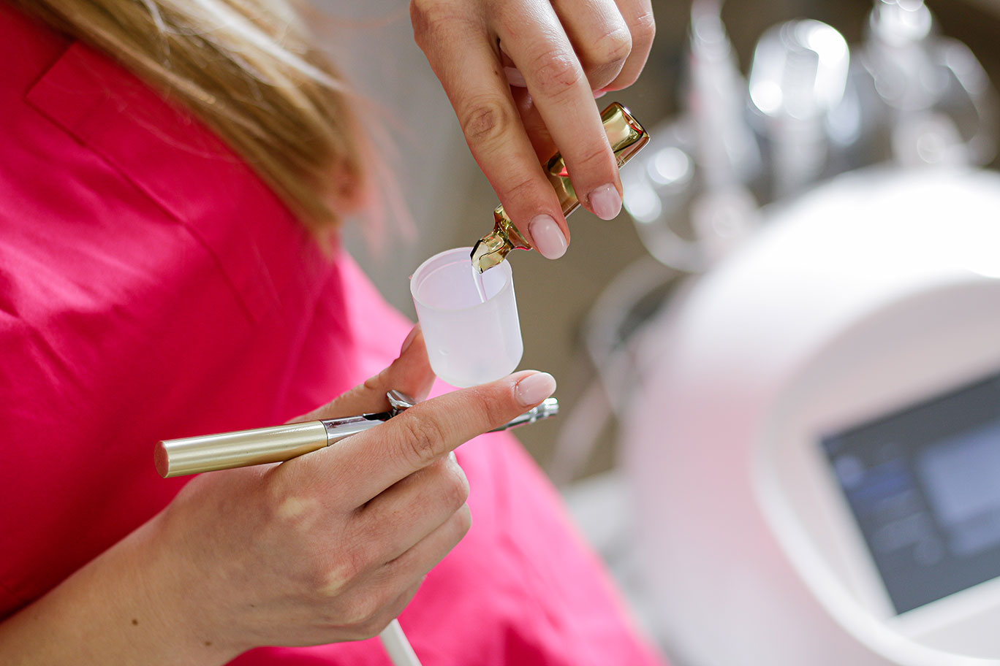
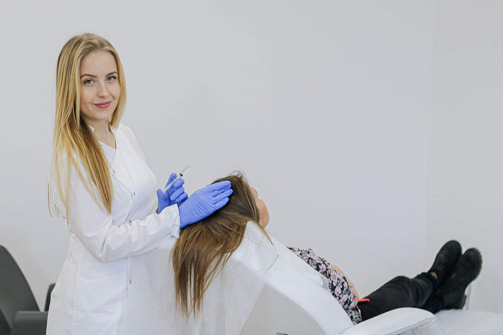
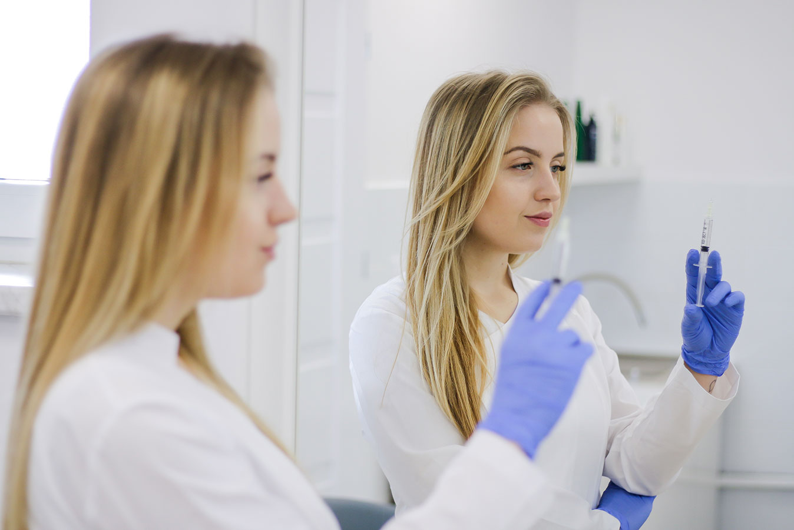
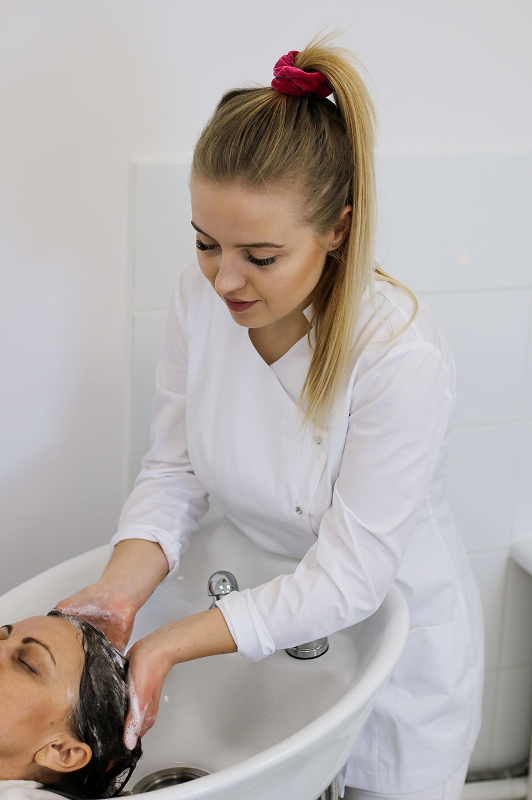
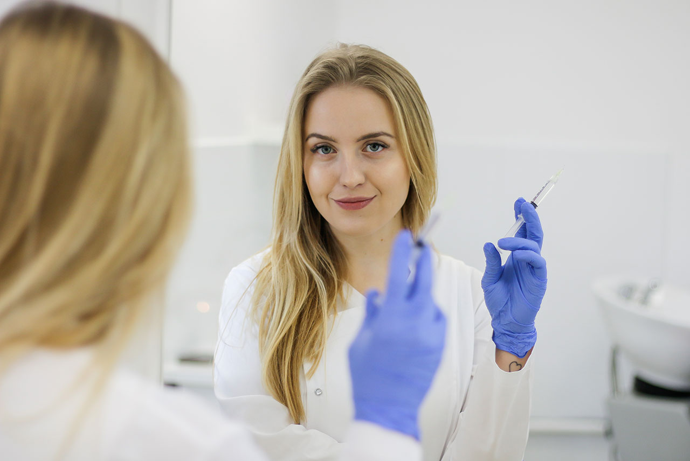
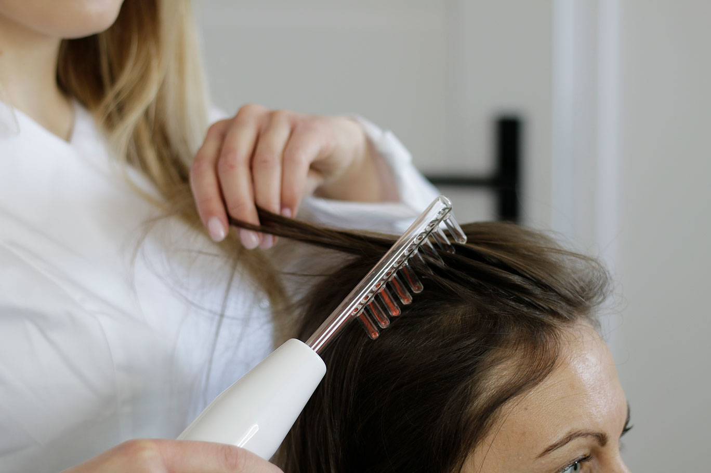
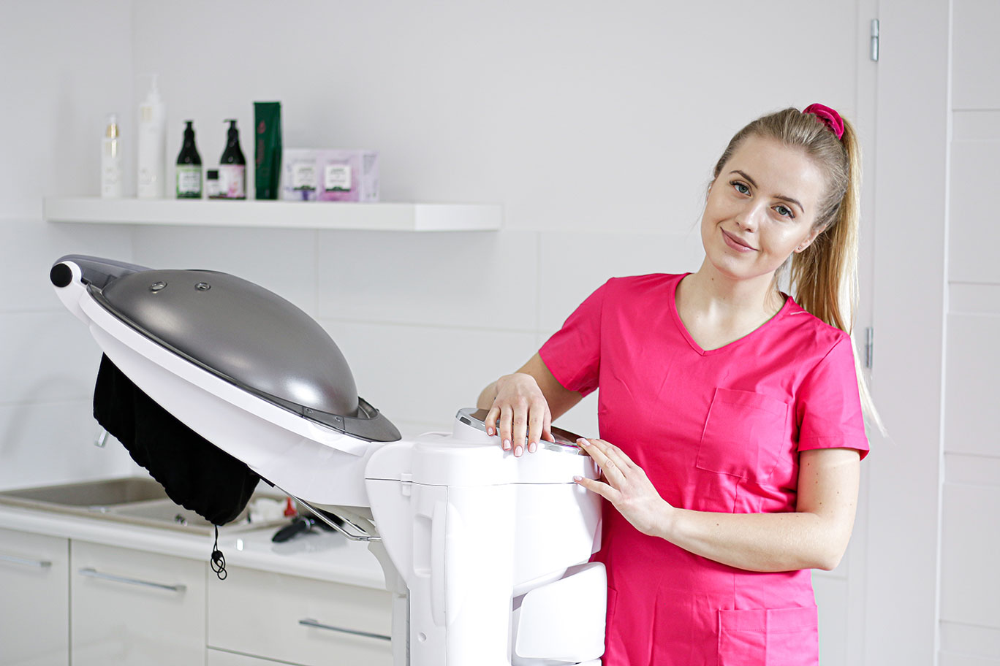
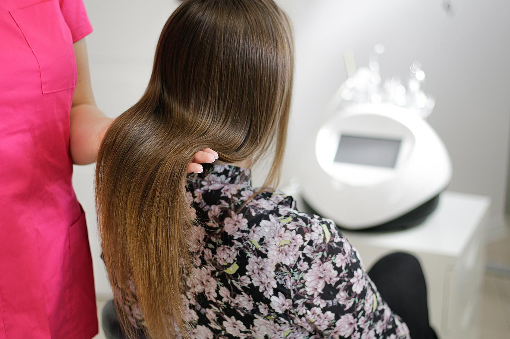
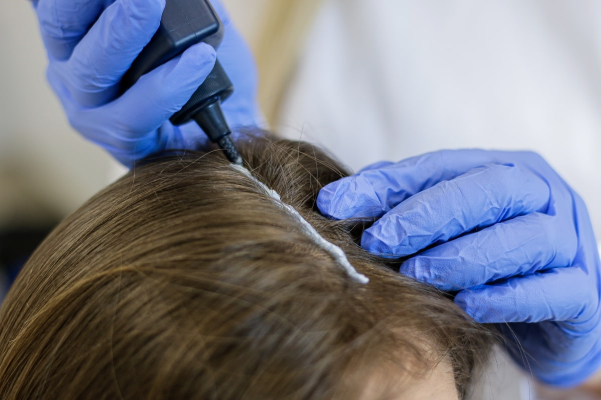

Skończyłam kosmetologię w Wyższej szkole Fizjoterapii z siedzibą we Wrocławiu. Moja
praca
magisterska
dotyczyła łysienia.
Ukończyłam studia podyplomowe w Poznaniu o kierunku Trychologia.
Jestem po licznych kursach i szkoleniach z zakresu Trychologii.
Prowadzę swój gabinet od dwóch lat. Na swoim koncie mam liczne sukcesy terapii.
Każda kuracja jest dobierana indywidualnie do zdiagnozowanego problemu. Moje podejście jest mocno
holistyczne. Nie tylko niweluje skutki ale przede wszystkim szukam przyczyn.
Moje terapie opierają się na użyciu nowoczesnych i profesjonalnych urządzeń, preparatów i metod
zabiegowych w celu doprowadzenia skóry głowy do prawidłowego stanu.
Kuracje trychologiczne są stworzone dla dorosłych jak również dzieci.
Z jakim problemem można się do mnie zgłosić
nadmiernym wypadaniem włosów
Wspieram leczenie takich chorób jak:
Łuszczyca , atopowe zapalenie skory, łojotokowe zapalenie skory
Łysienie plackowate, zapalenie mieszka włosowego, łysienie bliznowaciejace
oferta
Infuzja tlenowa
poprawa stanu chorej skóry głowy
działanie przeciwzapalne
dotlenia skórę oraz cebulki
pobudza krążenie
nawilżenie, ukojenie
redukuje łupież, zmiany łuszczycowe
wzmacnia i odżywia włosy

Mezoterapia igłowa Dr. Cyj
zatrzymanie wypadania włosów
redukcja łysienia
wzmocnienie i poprawa kondycji mieszków włosowych
odrost nowych włosów
zagęszczenie i pogrubienie włosów

Mezoterapia igłowa
pobudza i odżywia mieszki włosówe
hamuje wypadanie włosów
stymuluje krążenie
działa nawilżająco na skóre
pogrubia włosy

Masaż głowy z peelingiem
pobudza mikrokrążenie
działa relaksująco
złuszcza martwy naskórek
dotlenia cebulki włosów
stymuluję włosy do wzrostu
łagodzi ból głowy i skóry głowy

Osocze bogatopłytkowe + fibryna
stymulacja procesów regeneracyjnych
zatrzymanie łysienia
poprawa kondycji skóry
odrost nowych włosów
utrzymanie przeszczepionych włosów

Prądy D'arnsonval
poprawa ukrwienia
działanie antybakteryjne
działanie dezynfekujące
stymuluję porost włosów
hamuje wydzielanie łoju

Sauna Ozonowa
działanie przeciwłupieżowe
działanie przeciwłojotokowe
wzmacniające cebulk
nawilżanie włosów
poprawa stanu chorej skóry

Zabiegi na łodygę
nanoplastia - dogłębne nawilżenie i odżywienie włosów. W 100% bezpieczny zabieg
rekonstrukcji łodygi, nawet dla kobiet w ciąży. Włosy po zabiegu są lśniące,
proste
oraz
zdrowsze.
inne zabiegi pielęgnacyjne dostosowane indywidualnie do klienta , tj. botoks na
włosy,
zabieg z kawioru i czarnej perły - PREMIUM,

Peeling skóry głowy
złuszcza nadmierny naskórek
łagodzi stany zapalne
działanie przeciwłupiezowe
reguluje wydzielanie sebum
polepsza wchłanialnośc składnikow aktywnych

pierwsza wizyta
Bezpośrednio przed pierwszą wizytą w gabinecie trychologicznym nie należy myć włosów. Można zrobić to na
dobę
przed konsultacją. Pozwoli to uzyskać wiarygodnyy obraz problemu, zobaczyć jak wyglądają i zachowują się
skóra głowy oraz włosy.
Przed konsultacją trychologiczną nie powinno się również farbować włosów. Taki zabieg można
przeprowadzić
najpóźniej na około tydzień przed wizytą. Świeża farba oraz jej niespłukane pozostałości mogą bowiem
zaburzyć obraz i przeszkodzić w trafnej diagnostyce.
Na pierwszą wizytę u trychologa warto zabrać ze sobą wyniki swoich badań takich jak morfologia, badanie
poziomu żelaza i ferrytyny , TSH, FT3, FT4 , ANTY-TPO , ANTY – TG oraz witamin B12 i D3. Pomoże to w
odnalezieniu źródła problemów.